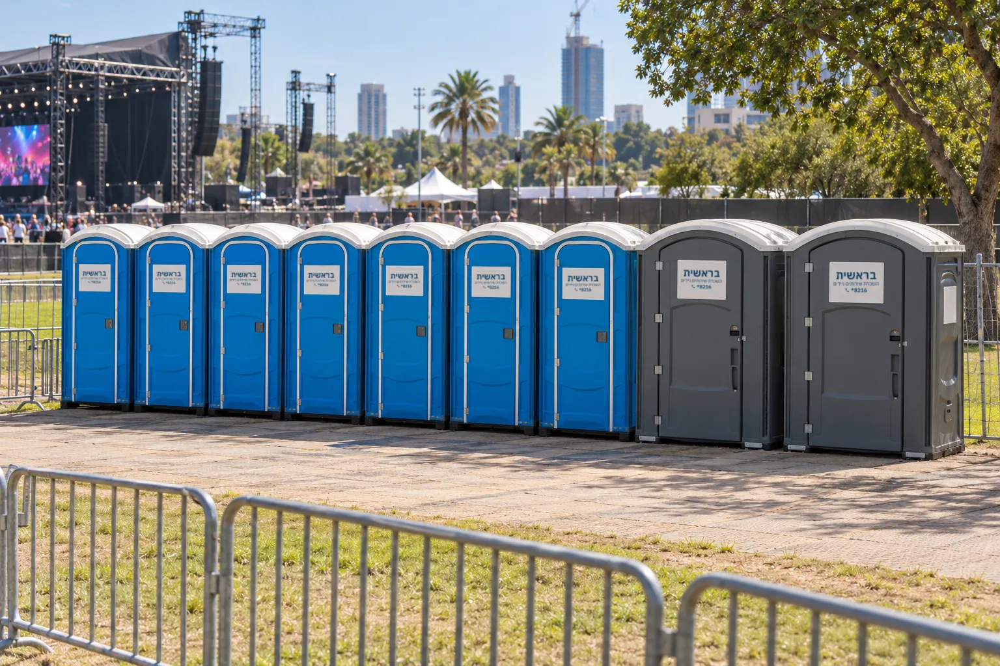
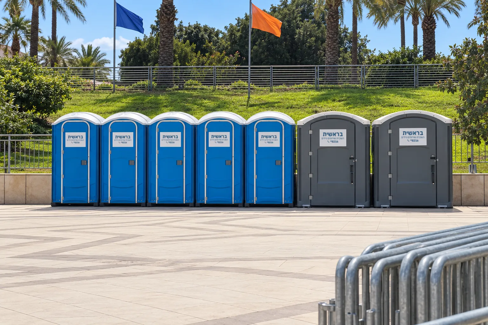
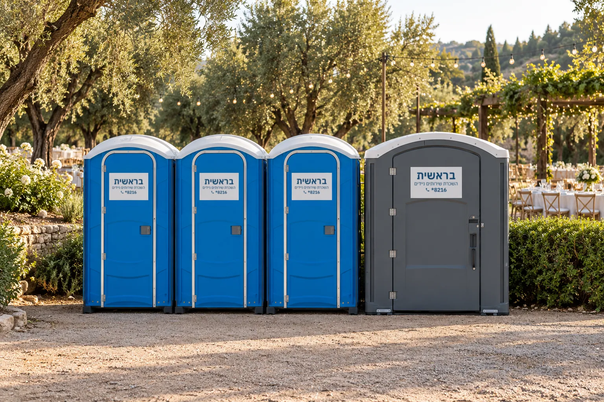
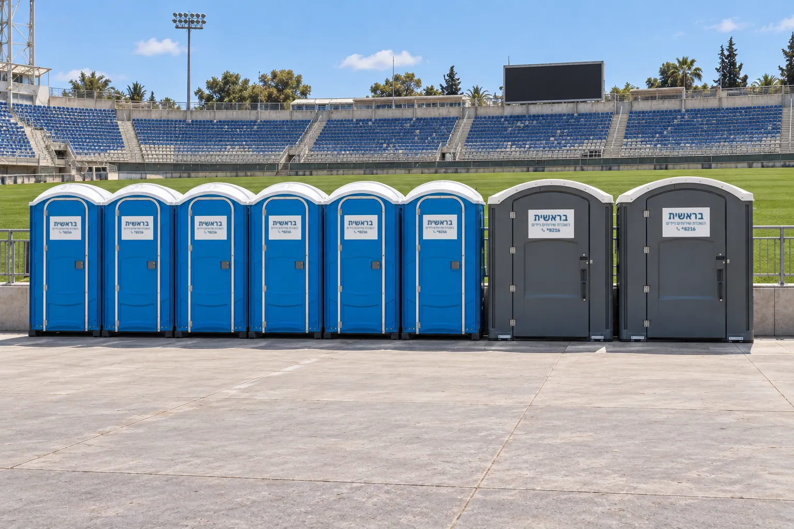

השכרת שירותים ניידים לאירועים
אחד הפרטים שקל לשכוח בארגון אירוע הוא השירותים. שירותים ניידים הם פתרון סניטרי זמני לאירועים ללא תשתית קבועה, במגוון דגמים מבסיסיים ועד מפוארים, ומבטיחים נוחות למשתתפים ושמירה על היגיינה באירועים קטנים כגדולים.
מחתונה בטבע ועד פסטיבל
השכרת שירותים ניידים חיונית בחתונות ובר מצוות, באירועים עסקיים ואירועי חברה, במסיבות, באירועי ספורט ובפסטיבלים. שירותים מפוארים מתאימים במיוחד לאירועי פרימיום כמו חתונות בטבע, פסטיבלי מוזיקה ומתחמי VIP.
שירותים ניידים מאפשרים לקיים אירועים במיקומים ייחודיים בטבע, ללא צורך בהקמת תשתיות קבועות של צנרת וביוב. באירועים בטבע ובאתרים היסטוריים הם גם מונעים זיהום ופגיעה בסביבה.





מה מציבים באירוע
שירותים כימיים סטנדרטיים
הפתרון הבסיסי והנפוץ ביותר, מתאים למרבית האירועים.
שירותים מפוארים (VIP)
חוויה משודרגת עם אבזור יוקרתי, לאירועים אלגנטיים. קרונות שירותים מפוארים
שירותים נגישים
מתוכננים במיוחד לבעלי מוגבלויות, וחיוניים לעמידה בתקנות הנגישות. שירותים ניידים לנכים
תחנות שטיפת ידיים ניידות
מוסיפות שכבת היגיינה נוספת, וחשובות במיוחד באירועי מזון.
ההתאמה לכמות המשתתפים היא המדד החשוב ביותר
ככלל אצבע, באירועים של עד 200 משתתפים מומלץ להציב 2-3 תאי שירותים. באירוע של כ-500 אורחים יש להעלות את הכמות ל-5 תאים לפחות, ולהמשיך ביחס דומה ככל שכמות האנשים גדלה.
הנוסחה המקובלת היא 1-2 תאים לכל 100 משתתפים באירוע של מספר שעות. חשבו נדיב: תמיד עדיף להזמין יחידה נוספת מאשר להצטער על תורים ארוכים.
מספר המשתתפים ומשך האירוע קובעים את כמות היחידות; סוג האירוע משפיע על סוג השירותים; מיקום ותנאי השטח משפיעים על אפשרויות ההצבה והגישה.
קרונות מפוארים לפי גודל האירוע
קרון 2 תאים
עד 200 אורחים.
קרון 4 תאים נגיש
עד 350 אורחים, עם מעלון.
קרון 6 תאים
עד 400 אורחים.
נקי ותקין לאורך כל האירוע
השכרת שירותים אינה מסתיימת בהצבת התא. אנחנו מציעים שירותי תפעול הכוללים איש צוות ייעודי שאחראי לניקיון שוטף ולבדיקת תקינות התאים בזמן אמת, שאיבת מיכל האגירה באופן הרמטי וחידוש חומרים מתכלים. ניתן לשדרג גם במפיצי ריח אוטומטיים ובמוזיקת רקע.
באירוע קטן של מספר שעות בדרך כלל אין צורך בתחזוקה שוטפת. באירוע גדול, ממושך או יוקרתי במיוחד, חשוב לוודא שהשירות כולל תחזוקה וניקיון שוטף. פינוי מיכל האגירה חיוני במיוחד באירועים הנמשכים ימים ארוכים.
מהשיחה הראשונה ועד הפינוי
ייעוץ והבנת הצורך
נעזור להעריך את הצרכים הספציפיים של האירוע.
בחירת חבילת השירות
סוג וכמות השירותים המתאימים.
מועד ומשך ההשכרה
תיאום זמני האספקה והאיסוף.
הכנת ההזמנה
ניקיון, בדיקת תקינות ואבזור היחידות.
אספקה
הובלה והצבה של היחידות באתר האירוע.
איסוף
פינוי היחידות בתום האירוע.
אירועים גדולים שליווינו: לעמוד הפרויקטים
שאלות נפוצות על שירותים לאירועים
כיצד פועלים שירותים כימיים ללא חיבור לביוב?
השירותים פועלים כמערכת עצמאית הכוללת מיכל אגירה אטום עם תמיסה כימית ייעודית. התמיסה מפרקת את הפסולת האורגנית, מחטאת את המיכל ומנטרלת ריחות, ופתחי אוורור עליונים מאפשרים סירקולציה של אוויר.
מהם הפרמטרים לבחירת כמות וסוג התאים?
כמות המשתתפים, ביחס של 1-2 תאים לכל 100 איש; אופי הפעילות, קרונות מפוארים לאירועים חגיגיים; והצורך בנגישות לאנשים עם מוגבלויות או לאוכלוסייה מבוגרת.
האם תייעצו לנו בהתאמת כמות התאים?
כן. מומלץ להיעזר בצוות המקצועי שלנו כדי להתאים את כמות התאים לכמות המשתתפים באירוע.
האם שירות התחזוקה כלול במחיר?
לא תמיד. לפני שמזמינים, חשוב לוודא שהמחיר כולל ניקיון וחיטוי, בדיקה יסודית לפני אספקה ושאיבה בתדירות הרצויה. ממה מורכב המחיר
האם יש שירותים נגישים לנכים גם בציוד המפואר?
כן. בקרון 4 התאים קיים תא נגיש ייעודי עם מעלון חשמלי, רחב מהרגיל, עם מעקות אחיזה ומרחב תנועה מותאם.
איך השכרת שירותים ניידים חוסכת בעלויות?
היא מאפשרת לקיים אירועים במיקומים ייחודיים בטבע בלי דמי שכירות של גני אירועים, ומייתרת הקמת תשתיות קבועות של צנרת וביוב.
מתכננים אירוע? אל תשאירו את השירותים לרגע האחרון. חייגו 8216*, או השאירו פרטים בעמוד צור קשר. ייעוץ והצעת מחיר ללא התחייבות.